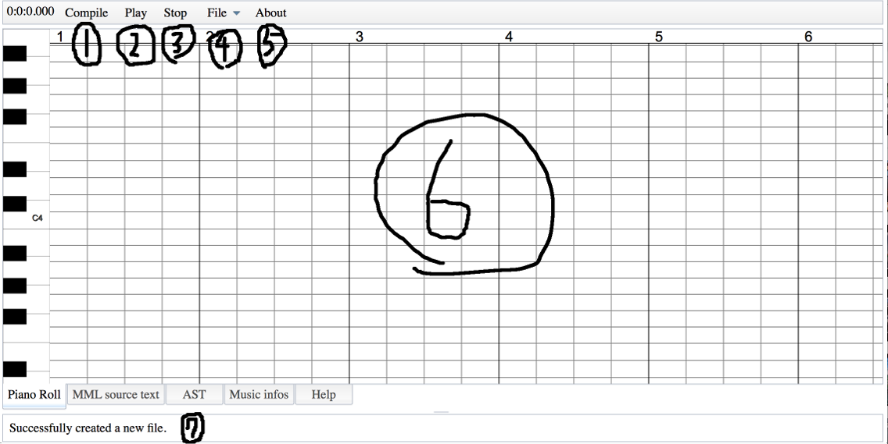

Introduction
Welcome to the Picopico Sequencer!
Picopico Sequencer is a Flash-free and purely HTML5 written music sequencer. It describes music in MML and has a piano-roll-style
visualization. Even though it is not implemented as of now, it will have the ability to edit music with GUI.
The Japanese term "Picopico" generally refers to the sounds produced by the traditional video game consoles such as the Family Computer and
Super Family Computer(SFC), which are also known as NES and SNES in English-speaking countries. So the name "Picopico Sequencer" suggests that
the program can only produce such eh...(I don't know how it can be described in English) primitive sounds.
However, there is a way to break the limit, which is explained later.
Notes
Currently, due to the Web Audio API I gurantee that only the Google Chrome would run it completely as I expect.
Basics
Picopico Sequencer is a web-based music sequencer which uses MML for music notation. That means that you must first write some MML source in order for it to play some music. For a brief tour of MML, see sample sources on the server. For the grammar of MML itself, see the following grammar reference.
Interfaces

1: Compile button
Compiles the MML source and automatically starts playing.
2: Play/Hold button
Plays compiled music and hold on the music while playing.
3: Stop button
Stops playing.
4: New button
Creates a new file.
5: Open button
Opens a file previously saved on LocalStorage or the server.
6: Save button
Saves the MML to LocalStorage or the server.
7: About button
Opens the "about this program" page.
8: The side bar
Shows various properties and informations on the music and a selected note.
9: The tool bar
The tool bar for editing MML in GUI. It is not functional currently though...
10: Main pane
This is the main area where you can view the music score, get help or edit MML source
11: The status bar
Tells you various status. And it shows the elapsed time from the beginning of the music in ticks while playing.
Quick reference for MML grammar
As you might know, MML has many dialects. It is often the case that although some two music sequencers are said to use the same MML processor, they actually have slightly different syntaxes and commands. So the following refereces may contain informations only valid for Picopico Sequencer.
Legends
- () : Represents arguments. Unlike the programming languages, you don't need to write the parentheses in MML source.
It also represents a group of characters referring to commands. - [] : Suggests that it can be ommited.
- "" : Double-quoted signs have to be explicitly written in MML source.
- xxx-xxx : Indicates a range of letters, numbers etc.
- XXX : Letters in capital refer to commands and those letters have to be put in MML source as they are.
Note that the case is not significant.(So xxx and XXX refer to the same command.)
Pitch and note duration
(A-G)([accidentals, step, gate, velocity]) where...
- accidentals = (!#+-) : accidentals
- step = 2n(n = 0, 1, 2...) or *0~*32767 : the step time
- gate = 2n(n = 0, 1, 2...) or *0~*32767 : the gate time
- velocity = 0~127 : velocity
A note, which is an "atom" in musical notation, is notated as a letter.
With followed by any of the following signs "!","#","+","-", the note is treated like notes with sharps or flats. Each sign represents a "natural", "sharp", "sharp" and "flat" respectively and can be followed by other accidentals.
The note command can take additional three arguments. The first represents the step time which is the duration in which
the note should be played. It usually takes a note value. And it is worth noting that if step is ommitted the default
value set by a "L" command will be applied.
In addition, you can express "step" in ticks instead of a note value. What is notated in ticks can be written like
"*some_number".
Furthermore you can lengthen the duration by adding "^"(circumflex) and an extra duration.
And dots after the step time lengthen the note duration by half the preceding number.
The second parameter called "gate" refers to the gate time which is the real duration in which the note will be played.
Finally the last named "velocity" literally means the velocity which is equivalent to the volume in Picopico Sequencer.
example 1:
cdef edc /It plays the sequence "CDEF DEC" with each note in the default length
c++++ /This is equivalent to d++(=e)
c- /This means a flat C, which is actually a B.
c!
example 2:
c /in the default duration
c4 /A quarter note of C
c+8 /An eighth note of sharp C
example 3:
c*480 /This is the same as writing "c4"
c*480.. /You can add dots, which is explained later on
example 4:
c1^1 /in the same duration as two whole notes
c4^*480^8 /You can specify some of the durations in ticks
example 5:
c4, 8 /It describes the note as a quarter note, but it actually sounds as an eighth note（so you can say it denotes a staccato)
c, 8 /same as above(if the default length is set to 4)
example 6:
c4,,127 /Played at the maximum volume
c,,-20 /Plays a C note at 20 less in velocity than the last one
Rests
R([step]) where...
- step = 2n(n = 0, 1, 2...) or *0~*32767 : the step time
A rest, which is the other "atom" in music notation, is notated as the letter "r". Because it is identical in usage to the note command except that the rest command can take just one parameter, I'm not going to dig into this command any further.
e.g.
r4 /A quarter rest
r4.. /It is 4+8+16 in duration
r4^8^16 /The above example can be written like this
r*480 /You can specify it in ticks
Definition of track
"("T (number)")"
"["TRACK (number)"]" where...
- number = 1~ : the track number
Defines a new track. You can define any number of tracks as long as your computer allows.
e.g.
(t1)
[track 2]
Key signatures
"["K.SIGN (key1, key2...)"]" or "["K.SIGN (sign note1, note2...)"]"
"["KEY_SIGNATURE (key1, key2...)"]" or "["KEY_SIGNATURE (sign note1, note2...)"]" where...
- key1, key2... = (+-#)(A-G) : pitches
- sign = (+-#) : a sign representing sharps or flats
- note1, note2... = (A-G) : notes that will have accidentals
Changes the key signature. As of now it can't take the key names such as CMajor, EbMajor and AMinor. Maybe it can take those names in the future, though.
The natural sign comes to play when combined with this command, because in MML accidentals don't cancel the key signatures(they actually raises, or lowers, the pitch by 1 semi-tone).
e.g.
[k.sign +c, +f] f! /Because of the key signature, F always has a sharp on it but the sign cancels the effect.
[k.sign -bea] b- /Because the key signature already has a flat on B, the minus sign lowers the pitch by another 1.
(So it can be considered as a double-flat)
Changing octave
O(octave) where...
- octave = 1~8 : the octave
Sets the octave. The initial value is 4 and a Middle C can be written as "O4 c".
It is worth noting that operators "<" and ">" raise, or lower, the octave by 1.
e.g.
o3
o8
o4 c /Plays a middle C
o4 < /Here is as high in octave as it is when you explicitly write "o5"
Controlling the default length
L(length) where...
- length = 2n(n = 0, 1, 2...) : the default note length
Sets the default length(the value set to the step time when ommited). The initial value is "L4". Currently the "length" parameter can be only specified with a note value.
e.g.
l8
Changing the volume
V(velocity)
"["VELOCITY (velocity)"]"
U(volume)
"["VOLUME (volume)"]" where...
- velocity, volume = 0~127 : the volume
Sets the default volume. Although there are four ways of notation, they are all identical in functionality. If you omit the velocity parameter in a note command, it is set to the default volume.
e.g.
v127
u127
Setting the tempo
T(tempo)
"["TEMPO (tempo)"]" where...
- tempo = 30~300 : the tempo
Sets the tempo in beats per minute. Note that the above values are just the preferable values and therefore no error will be seen if out of the range. The initial value is 120.
e.g.
t100
t60
Changing the sound
@(program_number)
"["PROGRAM (program_number)"]" where...
- program_number = 0, 1, 2... : a number representing the type of sound
Changes the sound type. By default there are 6 types of sound. The following table shows the relations between program numbers and sound types.
| Program number | Sound type |
|---|---|
| 0 | Sine Wave |
| 1 | Square Wave |
| 2 | Sawtooth Wave |
| 3 | Triangle Wave |
| 4 | M-Shaped Wave |
| 5 | Noise |
e.g.
@0
[program 1]
Tuplets
"{"some MML"}"([step]) where...
- step = 2n(n = 0, 1, 2...) or *0~32767 : the step time
It plays the MML in curly braces within the "step". The "step" can be specified in the same way as the note command.
If the step is ommited the default duration will be applied as in the note command.
e.g.
{cde}4 /the triplet
{cdef}4.
Chords
"""some MML"""([ticks, delay]) where...
- ticks = 0~32767 : the duration in ticks
- delay = 2n(n = 0, 1, 2...) or *0~32767 : the delay in which each note will be played
It treats the double-quoted notes as a chord. You can write a duration in the double quotation marks only once.
e.g.
"c4eg" /A chord of C, E and G
"ceg"480 /equivalent to the above
"c4eg", 10 /plays a C, E and G with the delay of 10 ticks between the notes(so it can be thought of as an arpeggio)
Macro definitions
"["DEFINE macro_name"("[args]")""'"(macro_body)"'""]" where...
- macro_name = a character sequence in alphanumerics and underscores : the name of the macro
- args = same as macro_name : formal parameters for the macro
- macro_body = some MML code : the MML code which would be substituted for the macro
It is a macro. But unlike the one in the C programming language, the compiler will check the semantics before actually replacing the texts.
Macros can take parameters and they can be referred to as "$(a parameter name)" in the macro body.
e.g.
[define CMajor(l)'"c$(l)eg"'] /Defining a macro which yields a chord of "C"
Using macros
"$""{"(macro_name)[":"(args)]"}" where...
- macro_name = a character sequence in alphanumerics and underscores : the name of the macro
- args = a valid string in MML : arguments for the macro
Call macros introduced by the macro definitions.
Macros can take the less or same number of arguments than that of the formal parameters. If the argument list has
the less number of arguments than the formal parameter list does, the compiler will detect it and automatically fill
them with empty strings.
Macros can take any valid MML codes as arguments except line breaks and another macro call.
e.g.
l8 cded ${CMajor:1} /called the above macro, passing in 1 as the argument. This will be expanded to `l8 cded "c1eg"'.
l8 cded ${CMajor}ded8^1 /The above macro can be used like this. In this case, it'll yield `l8 cded "ceg"ded8^1'.
l8 cded ${CMajor:4^8}>c8^2 /This will be expanded to `l8 cded "c4^8eg">c8^2'.
Original sound wave definitions
"["FUNCTION "("args")""{"(function_body)"}""]" where...
- args = valid identifiers in Javascript : formal parameters of the function
- function_body = a code snippet in Javascript : a Javascript code which generates a sound wave
Defines a function which generates a new sound wave. The function have to obey the Javascript grammar and will be called, with the first argument being the elapsed time from the beginning of the current note(in seconds) and the second being the desired frequency(in hertz).
Although you can write any valid Javascript code in the curly brackets, there are times when you cann't use some global variables.
e.g.
[function (time, freq){return Math.sin(freq * 2 * Math.PI * time);}] /Defined another sine wave function.